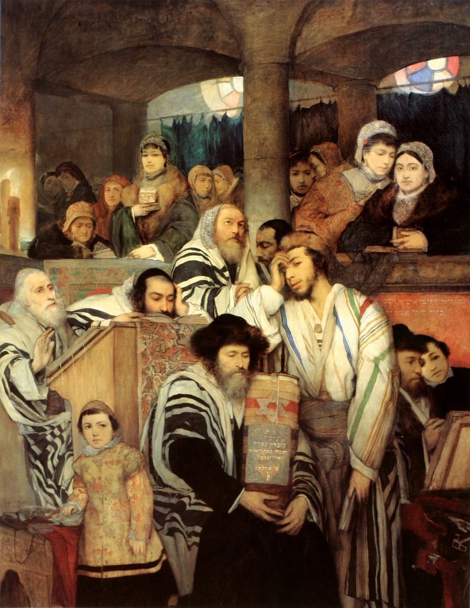

What is Yom Kippur, and what does the Bible actually call the Day of Atonement?
SEPTEMBER 21, 2026

“It's Yom Kippur today — it's on my calendar every year. What does the Bible actually call it, and where does the Day of Atonement ritual come from?”
The short answer. “Day of Atonement” is how this translation renders Leviticus's own name for the day, and the whole thing rests on two chapters: Leviticus 16, which describes one ritual on the one day of the year the high priest could pass behind the inner veil at all, and Leviticus 23, which puts that ritual on the calendar — the tenth day of the seventh month — and attaches a penalty for skipping it. Nearly everything the day still asks of anyone who keeps it — the fast, the confession, the sense of a year's verdict being finalized — descends from those two chapters. And the ritual itself hasn't actually been performed since the one room it required stopped existing.
What Leviticus 23 dates, and the penalty it names
Leviticus 23:27 sets the date in plain terms: “on the tenth day of this seventh month is the Day of Atonement… and you shall afflict your souls” — a Hebrew idiom this translation keeps rather than replacing with a later word like “fast,” since the phrase itself doesn't specify a method (v27). Two verses later the chapter does something it does nowhere else in its whole festival calendar: it names a penalty. Anyone who does not afflict himself is “cut off from his people” (karet); anyone who works at all on the day faces destruction (vv29–30). Of seven appointed times listed in that chapter, this is the only one whose non-observance carries a stated consequence that severe — which is its own kind of answer to why the day still gets taken seriously by people who otherwise keep very little of the festival calendar (more on that dating and penalty).
Leviticus never itemizes what “afflict your souls” actually requires — that's a later, rabbinic addition. The Mishnah, compiled a little over a century after the Second Temple fell, spells the one idiom out as five separate restrictions: no eating or drinking, no washing, no anointing with oil, no wearing leather shoes, no marital relations. All five are read out of a phrase this chapter states exactly once and never explains.
The one ritual behind the word “atonement”
Leviticus 23 dates the day; Leviticus 16 is where the actual ritual lives, and it's unlike anything else Aaron does the rest of the year. Dressed in plain linen instead of his usual ornamented priestly garments, he first sacrifices a bull for his own sin and his household's (v6), then casts lots over two identical goats — one lot “for Jehovah,” one “for Azazel” (v8). The first goat is slaughtered as a sin offering, and its blood is the one thing that gets Aaron past the veil into the innermost room at all that year (v15) — the same high priest’s office, doing the one thing it otherwise never does. The second goat is kept alive: Aaron lays both hands on its head, confesses over it “all the iniquities of the children of Israel, and all their transgressions, even all their sins,” and it is led out into the wilderness carrying them away (vv21–22). One animal's blood goes in; one animal walks out. That's the ritual the day's whole English name is built on.
Scapegoat, demon, or cliff — the debate behind one word
“Azazel” is kept as a name here rather than translated, and that's a real decision, not a dodge: the Hebrew grammar in verse 8 sets it directly against “Jehovah” — one proper name paired with another — which is part of why three genuinely different readings of the word still have real scholarly standing: a description of what the goat does (the King James and Geneva Bibles both go this way, rendering it “the scapegoat”), the name of a specific place the goat was later driven to, or the name of a being the goat's sins are sent back to. William Tyndale coined “scapegoat” for his 1530 translation precisely because English had no word at all for a goat that carries guilt away rather than dying for it — “(e)scape goat.” This translation doesn't pick a side among the three readings, and neither does the fuller case for each one, laid out at the chapter's own note on the word.
What happened when the ritual's one room stopped existing
Everything above requires a building: a bull and a goat's blood carried past a specific veil, into a specific room, by a specific office-holder, once a year. Rome destroyed the Second Temple in the year 70, during the suppression of the Jewish revolt, and took that room with it — there was no more veil to carry blood past. Rather than let the ritual disappear, the rabbis who compiled the Mishnah a little over a century later wrote it down in exhaustive procedural detail, in a tractate named simply Yoma, “The Day” — not a memory being filed away, but a rehearsal kept ready in case the Temple was ever rebuilt. That's still built into how the day is kept: the traditional afternoon service includes a recitation, the Avodah, in which the congregation walks back through the entire high-priestly ritual from memory — including the one moment in the Temple's year when the high priest said the divine name aloud, a sound nobody has been in a position to reproduce for nineteen centuries, recited anyway, every year, as text.
The evening that opens the fast now begins with a different piece entirely — Kol Nidre (“all vows”), a chanted Aramaic legal formula that annuls vows rashly made to God in the year ahead. It's genuinely older than most people assume: rabbinic authorities in Babylonia were already discussing it by the sixth century, with real evidence of its use by the eighth. That's centuries before the legend usually attached to it — that Jews forced to convert to Christianity during the Spanish Inquisition composed it in secret, to annul the conversion oaths they'd been made to swear under threat of death. Most modern scholarship treats that origin story as a myth the formula predates by a long way. It survives as an explanation anyway, less because anyone can source it than because it names something true about the prayer even if it isn't where the prayer came from: a formula for un-swearing a vow made under duress is exactly the kind of thing a community repeatedly forced into conversion would recognize as its own, whether or not it was written for that purpose.
The day's modern name got borrowed once, by a war. On October 6, 1973, Egypt and Syria opened a coordinated surprise attack on Israel, timed deliberately for the one day large parts of the country — soldiers included — would be in synagogue, fasting, and away from radios and vehicles. The conflict that followed is known in English almost entirely by the date it started on, the Yom Kippur War, and it's the one piece of this whole subject most people have actually heard of, usually without the rest of the history attached to it.
How the day closes
The final service, held on Yom Kippur and no other day of the year, is Ne’ilah — “closing,” a reference to the Temple's gates being shut at day's end, repurposed as a metaphor for the close of judgment itself. Where the rest of the liturgy between Rosh Hashanah and this service asks to be “written” into the Book of Life, Ne’ilah's language shifts to “sealed” — the verdict moving, in the traditional picture, from draft to final in the space of these ten days. The day itself ends with a single long blast of the shofar, and then, after twenty-five hours, a meal.
Further reading
- Mishnah, tractate Yoma — the rabbis' own procedural reconstruction of the Leviticus 16 ritual, compiled after the Temple's destruction. sefaria.org
- Chabad.org. Five Afflictions on Yom Kippur (Mishnah Yoma 8:1). chabad.org
- My Jewish Learning. Ancient Yom Kippur Observances — the Second Temple practice and what changed after 70 CE. myjewishlearning.com
- My Jewish Learning. Kol Nidrei — the Geonic-period origin and the disputed Inquisition legend. myjewishlearning.com
- My Jewish Learning. Ne'ilah Service: Closing of the Gates. myjewishlearning.com
- Wordorigins.org. Scapegoat — Tyndale's 1530 coinage. wordorigins.org
- History.com. Yom Kippur War. history.com
Read in the text
- Leviticus 16
- Leviticus 23
- Compared against the translation’s seven-version shelf — the NIV, the KJV, the Douay-Rheims, The Living Bible, the 1599 Geneva Bible, the American Standard Version, and the New World Translation. See how the translation is made.